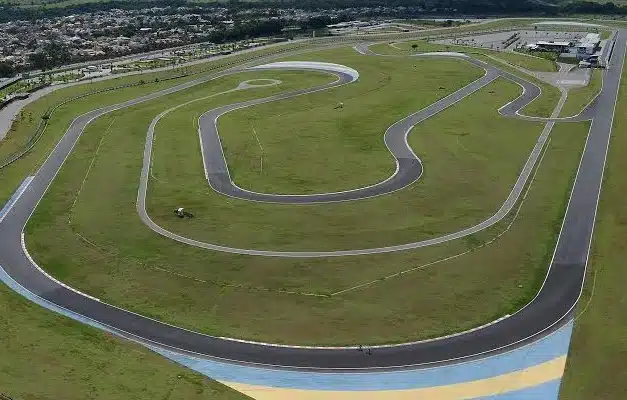

Pistas
Autródromo Cascavel
O circuito mais rápido do Brasil foi inaugurado em 1970 e é, junto dos autódromos de Interlagos e Tarumã, o traçado mais antigo do país. Foi construído com o esforço de Zilmar Beux – que hoje dá o nome ao autódromo – junto de outros entusiastas da velocidade do oeste paranaense.
Ela também esteve no primeiro calendário da Stock Car, em 1979, mas ficou 20 anos sem receber a categoria (entre 1992 e 2012). Depois de passar por uma grande reforma, a pista de 3.058 metros, muito apreciada por todos os pilotos, voltou ao calendário.
É a pista mais veloz de todo o calendário, onde os carros da Stock Car completam uma volta marcando mais de 170 km/h de média.
Autródromo Goiânia
O Autódromo de Goiânia foi inaugurado em 1974, e cinco anos depois fez parte do primeiro calendário da história da Stock Car. Seu maior vencedor é o 12 vezes campeão Ingo Hoffmann, com nada menos que 12 triunfos. A pista ficou 13 anos sem receber a categoria e, após grande reforma, retornou ao calendário em 2014. É considerada uma das pistas mais seguras do país, com largas áreas de escape e três opções de traçado – o principal deles tem 3.835 metros.
Foi o circuito onde Rubens Barrichello conquistou sua primeira vitória na Stock Car – justamente na Corrida do Milhão - em 2014. Ele também é o maior vencedor da pista entre os pilotos em atividade, acumulando 8 vitórias em Goiânia.
Autródromo Interlagos
O Autódromo de Interlagos, oficialmente chamado de Autódromo José Carlos Pace, é um dos circuitos mais icônicos do Brasil e do mundo. Faz parte do calendário da Stock Car desde os primórdios da categoria e é conhecido por ser palco de grandes disputas e momentos históricos do automobilismo nacional. Seu maior vencedor na Stock Car é Thiago Camilo, que acumulou 9 triunfos no circuito até hoje.
A pista passou por diversas modernizações ao longo dos anos e conta com um traçado técnico e desafiador, que possui 4.309 metros de extensão. Interlagos é famoso por suas curvas emblemáticas, como o "S do Senna", e pelas condições imprevisíveis de corrida, que costumam surpreender pilotos e equipes.
Foi nesse circuito lendário que Daniel Serra conquistou uma vitória memorável na Stock Car em 2019, consolidando-se como um dos grandes nomes da categoria. Interlagos também é a etapa final do campeonato em muitos anos, tornando-se o cenário perfeito para consagrar campeões e proporcionar emoções ao público.
Carros
O Mitsubishi Eclipse Cross Stock Car foi mostrado ao público e à imprensa durante a etapa final da Stock Car Pro Series, campeonato que adotará os SUVs como base a partir da temporada de 2025.
O Mitsubishi Eclipse Cross Stock Car utiliza como base o Audace SNG01, projeto da Audacetech. Mais leve, estável e veloz que os carros utilizados até 2024, o Eclipse Cross chega para integrar um projeto repleto de tecnologia de competição automotiva, incluindo também um pacote de conectividade que deve revolucionar a forma como as corridas da categoria são assistidas dentro e fora dos autódromos.
A grande novidade para 2025 na Stock Car é que os SUVs vão substituir os sedãs após 45 anos de história. Na família Chevrolet, o Tracker Stock Car sucede o Cruze de competição, após oito anos e cinco títulos somados, encerrando mais um ciclo da marca, cujo legado nas pistas começou na etapa inaugural do campeonato, ainda em 1979. Uma história que também inclui Opala, Omega, Vectra, Sonic e Astra.
Mais ágil, estável e tecnológico, o Tracker Stock Car faz parte do projeto Audace SNG01, que tem objetivos ambiciosos para 2025. “Esta é uma oportunidade para apresentarmos todo o potencial desta nova plataforma, que foi desenvolvida com recursos avançados de engenharia e próprios para competição, como a asa móvel em fibra de carbono e conectividade 5G. O propósito é trazer ainda mais competitividade para os pilotos e emoção para o público”, explica Fernando Julianelli, CEO da Vicar, promotora da Stock Car.
O novo Toyota Corolla Cross que disputará o campeonato da Stock Car Pro Series no ano que vem foi revelado com a carroceria definitiva. Feito sobre a plataforma Audace SNG01, o SUV foi mostrado para as equipes de engenharia e executivos da Toyota GAZOO Racing na Audacetech, braço tecnológico do Grupo Veloci, controlador da Vicar, empresa promotora da Stock Car. O modelo vai acelerar na categoria ao lado do Chevrolet Tracker e do Mitsubishi Eclipse Cross, inaugurando uma nova era na competição a partir de 2025.
A história da Toyota GAZOO Racing na Stock Car começou em 2020, quando o atual Toyota Corolla estreou no grid da categoria. E, desde então, tem escrito uma história de conquistas ao longo dos primeiros cinco anos de disputas, com 106 corridas, 49 vitórias, 27 poles, 37 voltas mais rápidas e 141 pódios.